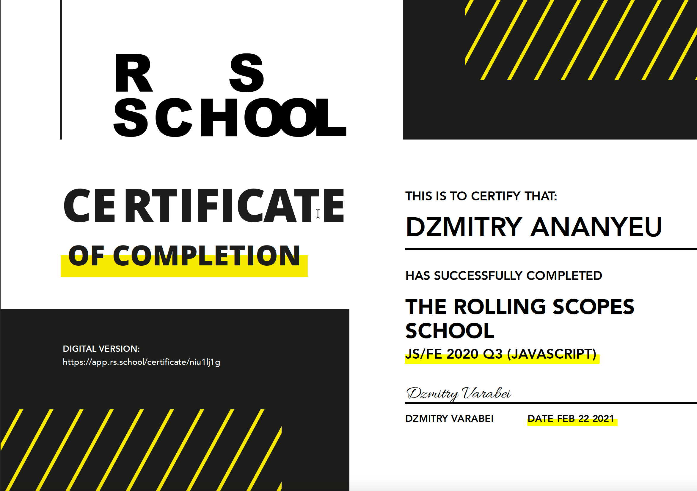
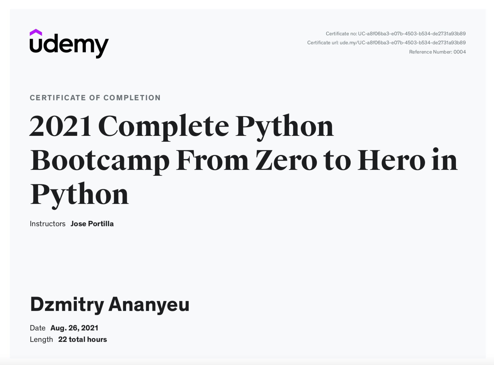
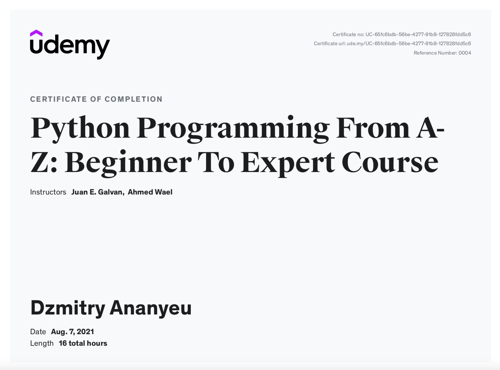
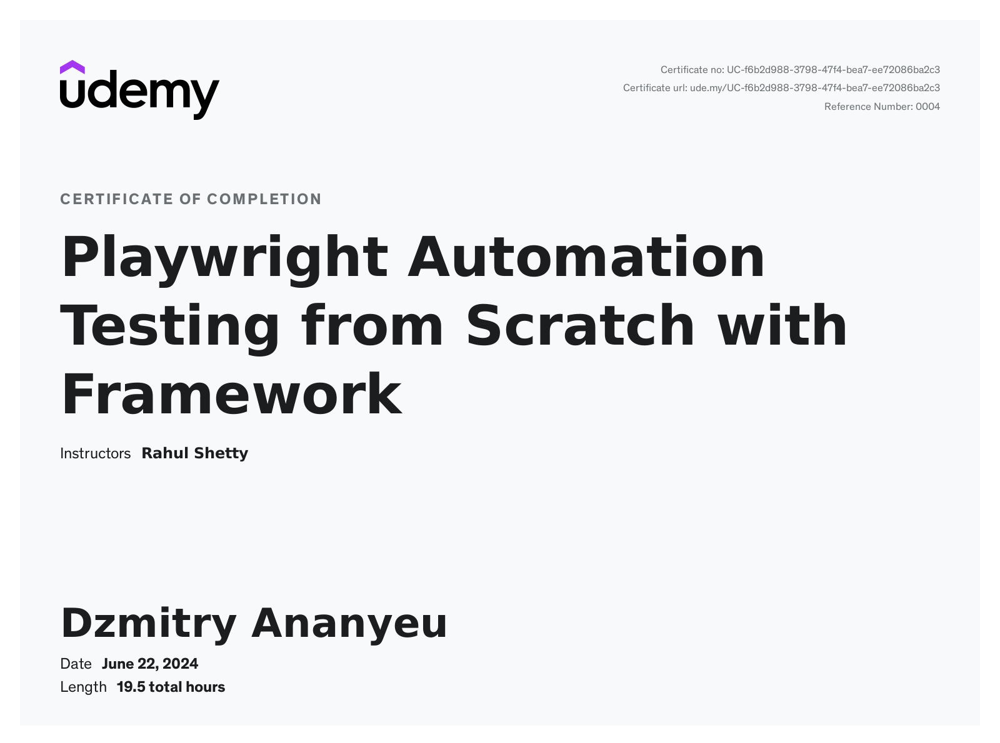
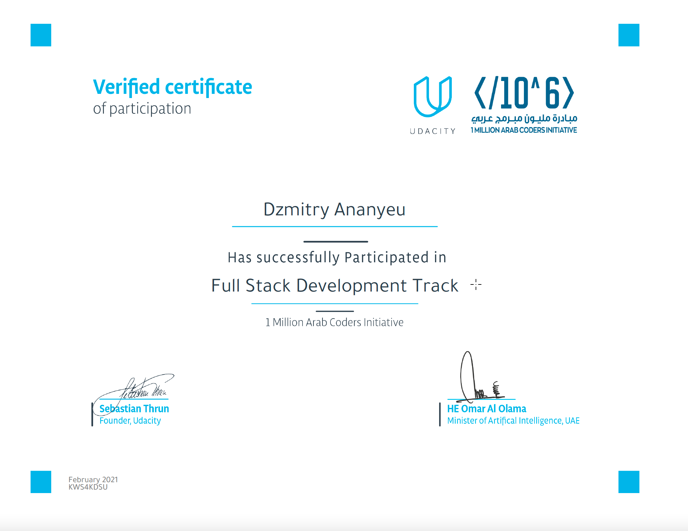
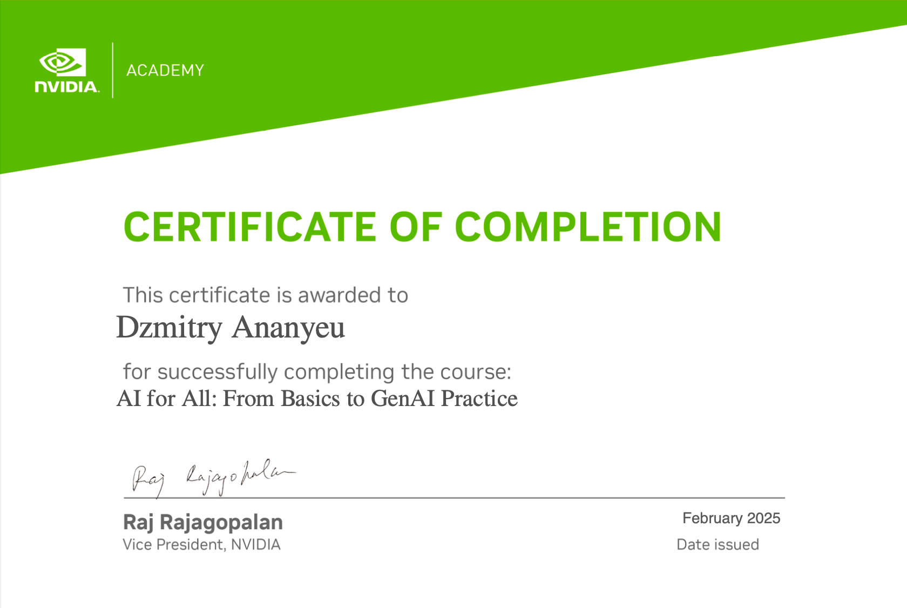
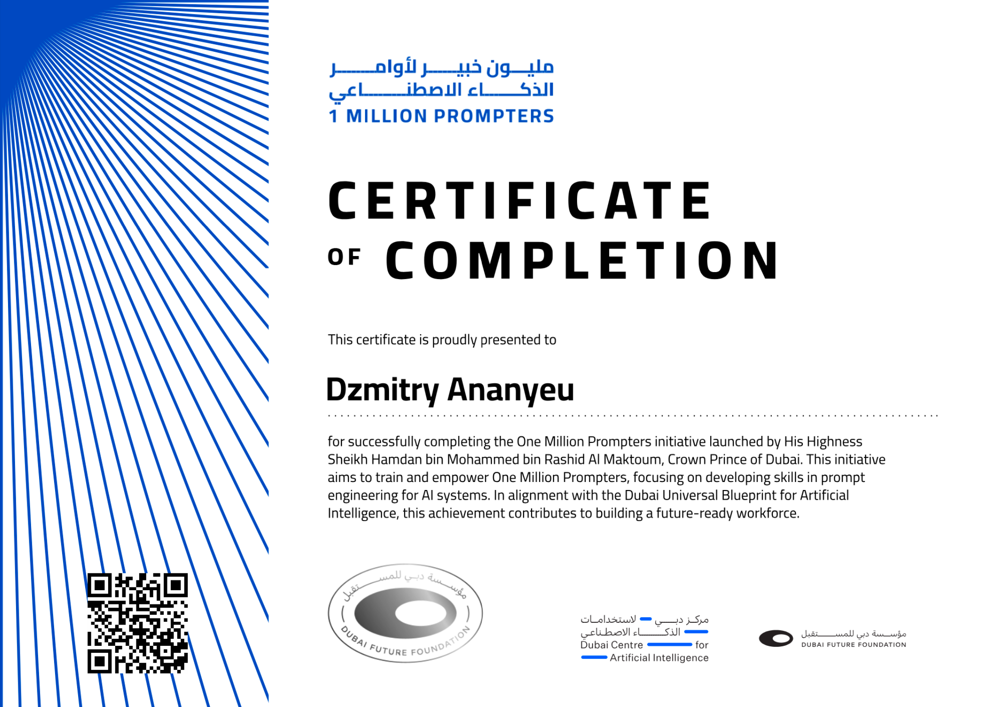
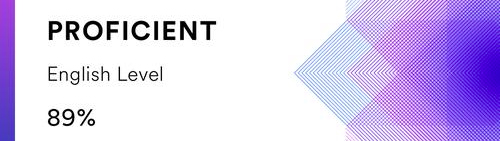

Dubai, UAE
Dzmitry Ananyeu
QA Automation Architect
Building scalable QA automation platforms and reducing release risk through system-level testing.
Reduced regression cycles from days to hours and cut manual QA effort by 70%.
13+ years experience
Platforms from scratch
CI/CD & DevOps
Capabilities
Automation Architecture Stack
Layers of a platform-grade QA practice: languages, runners, integration, delivery, performance, visibility, devices, and governance.
Core Languages
Python
Java
JavaScript
TypeScript
Test Automation
Playwright
Selenium
WebdriverIO
Appium
Pytest
TestNG / JUnit
API & Integration
REST API
Axios
Rest Assured
Postman
SoapUI
CI/CD & Infrastructure
GitLab CI/CD
GitHub Actions
Jenkins
Docker
Kubernetes
Performance Engineering
k6
JMeter
Lighthouse
Web Performance Benchmarking
Reporting & Quality Visibility
Allure
ReportPortal
HTML Reports
Custom QA Dashboards
Cloud Device & Cross-Browser Testing
BrowserStack
Sauce Labs
Selenoid
Quality Strategy & Security
QA Strategy
Risk Management
Test Planning
Quality Gates
OWASP Top 10
AI-assisted QA & Delivery
Cursor
ChatGPT Enterprise
GitHub Copilot
Systems
QA Automation Platform Architecture
How the platform works end-to-end: delivery triggers execution, automation validates systems, reporting surfaces visibility, and quality signals feed release decisions.
CI/CD
- GitLab CI
- GitHub Actions
- Jenkins
Infrastructure
- Docker
- Kubernetes
- BrowserStack
- Sauce Labs
- Selenoid
Automation
- Playwright
- Selenium
- WebdriverIO
- Appium
- API Testing
Reporting
- Allure
- ReportPortal
- HTML Reports
- QA Dashboards
Quality Signals
- Coverage
- Defect Leakage
- Regression Time
- Performance Baselines
Track record
Experience
Responsibilities, platform work, and outcomes - complete detail.
Dubai, United Arab Emirates - On-site - Full-time
QA Lead
IDCentriq is a UAE-based company building digital identity and authentication on palm-vein biometrics - secure onboarding, authentication, and payment flows for governments and enterprises, with a strong focus on privacy, transparency, and trust.
- Quality strategy: End-to-end QA ownership across web, mobile, and hardware-touching services (enrollment, authentication, payments, device pairing) - aligned with multiple engineering teams across web, mobile, hardware, and platform, and with product leadership.
- Automation foundation: Introduced a TypeScript-first stack (Playwright, WebdriverIO, Axios, k6): 200+ automated checks on critical API contracts and UI journeys; runs on every merge to main integration branches with artifacts and trend-friendly reporting.
- AI-assisted QA: Used Cursor and ChatGPT Enterprise in the loop for test ideas, documentation drafts, and defect/triage support - with explicit human review for accuracy, security, and privacy on identity and biometrics flows.
- Performance: Rolled out k6 load and soak scenarios on core auth and enrollment APIs; defined P95 latency budgets and fail-fast gates in CI so regressions surface before release candidates.
- Efficiency: Replaced ad-hoc manual passes with risk-ranked suites and parallel runners - cut average manual regression effort per release by ~35% within the first delivery cycles.
- Leadership: Lead QA chapter rituals (test design reviews, defect triage, release readiness); standardized test plans, risk registers, and exit criteria so squads share one language with dev and business stakeholders.
- Coverage depth: Expanded scenarios across iOS/Android clients, API surfaces, and hardware-integration edge cases (sensor, pairing, recovery) alongside functional and security-minded negative paths.
TypeScript
Playwright
WebdriverIO
k6
Axios
Cursor
ChatGPT Enterprise
Abu Dhabi Government Services Platform, Abu Dhabi, UAE
QA Lead / QA Automation Architect
- Team & Quality Leadership: Leading a team of 33+ QA engineers (manual & automation) across 20+ government digital transformation projects. Responsible for end-to-end QA strategy, delivery governance, and risk management.
- Automation Platform Development: Architected and implemented a scalable, unified QA automation platform from scratch, including:
- API automation framework.
- Cross-browser web automation (Chrome, Firefox, Safari, Edge).
- Mobile native and webview automation (iOS/Android) using Appium.
- AI Integration: Embedded GitHub Copilot and LLM-powered tools for auto-generating test cases, documentation, and defect analysis - cutting manual documentation effort by ~50%.
- CI/CD & Reporting Enhancements: Integrated automated test suites into GitLab CI/CD pipelines with real-time dashboards using Allure, HTML reports, and custom metrics portals to monitor:
- Test execution and performance benchmarks (via JMeter).
- Development KPIs (task quality, defect trends, reopened issues).
- Efficiency Gains:
- Reduced regression testing time from 1-2 days to under 4 hours.
- Decreased manual QA workload by over 70%.
- Reduced defect leakage to production by over 80% year-over-year.
- Cross-Entity Collaboration: Acted as the key liaison between TAMM and participating Abu Dhabi government entities to align QA objectives, streamline release cycles, and mitigate delivery risks.
- Knowledge Sharing: Authored detailed documentation and onboarding guides, enabling new QA team members to become productive quickly and supporting developers in test result analysis and troubleshooting.
Highlights of the QA Automation Platform
- Built comprehensive API, Web, and Mobile Automation Frameworks supporting multiple platforms and browsers.
- Created a two-click installation solution to deploy the platform across projects with minimal setup time.
- Set up centralized reporting portals (ReportPortal, Allure, custom HTML dashboards) for visibility across teams.
- Designed a Performance Monitoring Solution using JMeter for API and front-end performance benchmarks.
- Developed a Dev Statistics Tracker for real-time insight into task quality and defect trends.
- Introduced AI-driven tools for test documentation and scenario generation.
- Automated test execution through CI/CD pipelines (GitLab, Jenkins), with artifacts and detailed reports generated automatically.
- Documented onboarding flows and test framework usage to support non-technical users and cross-functional teams.
GitLab CI
Playwright
Python
TypeScript
Appium
JMeter
Allure
Selenium
GitHub Copilot
LLM / AI
Dubai, UAE
QA HEAD / QA Automation Architect
- Automation Platform Development: Created a full-scale automation platform from scratch, which includes:
- Frameworks: Developed robust API, Web (supporting Chrome, Firefox, Safari, Edge), and Mobile Automation frameworks (for both native apps and mobile web views), resulting in an increase of automated test coverage to over 90%.
- Performance Monitoring: Implemented a performance solution to track API speed and web benchmarks (evaluating JS, CSS, fonts, and image sizes) using JMeter, thereby reducing test execution time by approximately 40%.
- Simplified Deployment: Engineered a two-click installation solution that has been successfully deployed across 5+ projects.
- Development Metrics Collection: Developed a system for gathering and analyzing key development statistics (such as task quality and reopened issues), which improved error resolution times by around 25%.
- Efficiency Improvements: Reduced regression testing time from 1-2 days to just 2 hours while maintaining defect leakage below 1%.
- Framework & Tools Implementation: Led the development of automation frameworks from the ground up and integrated AI-driven tools for documentation and test case generation, cutting documentation efforts by about 50%.
- Team Leadership & Collaboration: Hired, onboarded, and mentored QA and Automation Engineers, increasing team productivity by 20% and working closely with Product, Development, and DevOps teams to shorten release cycles by 30%.
Full automation platform (from zero)
- Developed an API Automation Framework and Web Automation Framework supporting multiple browsers (Chrome, Firefox, Safari, Edge), along with a Mobile Automation Framework for native apps and mobile web views.
- Implemented a Performance Testing Solution to measure API speed and benchmark various web assets (JS, CSS, Fonts, Images, etc.).
- Created an installation solution that enables quick framework setup across multiple projects with just two clicks.
- Configured a centralized ReportPortal to display and track all project statistics in one place.
- Developed a Dev Statistics Tracking Solution, capturing key metrics such as task quality, number of reopened tasks, and other relevant KPIs.
- Integrated AI tools to assist with documentation and test case creation, enhancing efficiency.
- Set up and configured CI/CD pipelines using Jenkins (and GitHub workflows) to run tests and generate artifacts such as Allure reports and performance results.
- Created comprehensive documentation to onboard new QA team members with no prior experience and assist developers with running and analyzing test results.
Python
Java
Jenkins
GitHub Actions
ReportPortal
JMeter
Abu Dhabi, UAE
QA Lead / QA Automation Architect
- Unified Service Platform Development: Led QA processes for the development of TAMM, a unified government service platform serving over 150,000+ users. Successfully reduced post-release defects by 35% by introducing systematic test strategies and early-stage automation.
- Automation & CI/CD Integration: Designed and implemented robust automation frameworks using Python (pytest + Selenium) and Java (Java + Selenium + TestNG/JUnit). Integrated these frameworks into CI/CD pipelines, achieving a 60% reduction in regression testing time and increasing test coverage by 40%.
- Test Infrastructure Configuration:
- Developed an accessibility, localization, and link checker used on 400+ service screens per major release, tightening WCAG-oriented coverage and catching broken resources before production.
- Ran cross-browser suites on Selenoid across 10+ browser/OS combinations in parallel, cutting full regression wall-clock by roughly half versus sequential runs.
- Operated a mobile device farm of 20+ physical devices (iOS/Android) for native and hybrid apps, improving real-world signal vs. emulators-only testing.
- Integrated Sauce Labs and BrowserStack for burst capacity - peak 50+ parallel sessions for release hardening and vendor-specific builds.
- Process Optimization & Team Management: Led a team of 15+ QA specialists, standardizing testing processes and frameworks. Achieved a 50% reduction in critical defects by enhancing test reliability and coverage, while boosting team productivity by 30% through streamlined workflows and improved collaboration.
- Cross-functional Collaboration: Collaborated closely with development, product, and business teams to improve test case design and reduce the average release cycle time by 25%.
Python
pytest
Java
Selenium
Selenoid
BrowserStack
Sauce Labs
Minsk, Belarus
QA Engineer → QA Lead → QA Project Manager
a1qa is a pure-play QA and software testing company. Since 2003 it has supported Fortune 500 and mid-size clients worldwide with dedicated testing services. Outsourcing model: I contributed to 20+ projects across different domains.
- QA Project Manager (2015 – Jan 2019): On the last major account, acted as QA Manager for a large team - 6 QA engineers and 8 QA automation engineers. Day-to-day: task distribution and QC, metrics for PMs, test strategy and QA plans, communication with PO, BA, and client-side developers, agile ceremonies (grooming, planning, dailies, retros), estimation for Python + Selenium automation, QA automation planning, and customer-facing discussions on code review and automation roadmaps. Later worked on the customer side in Abu Dhabi (UAE) as QA Team Lead - planning work for testers, quality control, and hands-on Python + Selenium automation.
- QA Lead (2014 – 2015): Led a team of 5 testers. Beyond execution: allocating work, metrics and QA plans, aligning test approach with the project manager, stakeholder communication, ceremonies, and cross-project QA process reviews. Delivery followed Scrum - sprint-level test planning, regular test reports, risk analysis, and regression prioritization.
- QA Engineer (2012 – 2014): Enterprise document processing, information retrieval, and e-commerce. Owned test documentation (including test specs and cases), functional / cross-browser / GUI testing, quality reporting, environments and logs, CMS and 1C integration. Deep SharePoint work - content changes, farm deployment, permissions - plus Agile delivery practices.
- Stack: Python; Selenium, requests, axe, Locust; Pytest; CI - GitLab, GitHub Actions, Jenkins; Allure and HTML reports; mobile runs (Android / iOS) via Appium; performance with JMeter, Locust, and Python requests alongside Selenium.
Python
Selenium
Pytest
Appium
Jenkins
GitLab
GitHub Actions
Allure
JMeter
Locust
SharePoint
Sauce Labs
Code samples
Projects
Public JS/TS samples. Production Python stays under NDA.
COVID-19 dashboard
JS
API
Background
Education
Higher education in telecommunications.
Higher National Diploma
Graduated with honors
The Belarusian State Academy of Telecommunications
Belarus
Specialization Telecommunication Networks
Proof
Certificates
Click a thumbnail to enlarge.







English

EF SET: Upper-intermediate English.
Online assessment at EF SET. UAE 7+ years - comfortable in professional communication.